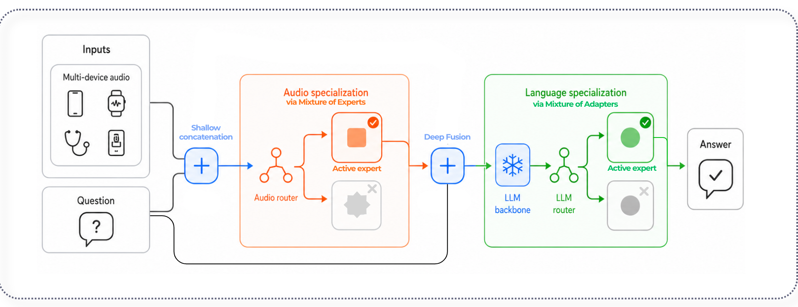

Respiratory Audio Question Answering for Health Assessment Under Real‑World Mobile Sensing Heterogeneity
Robust respiratory audio QA under real‑world sensing variability · MobiUK 2026 · abstract
Investigated respiratory audio question answering for health assessment under the heterogeneity introduced by real‑world mobile sensing conditions, with a focus on developing robust systems across diverse recording environments and devices.